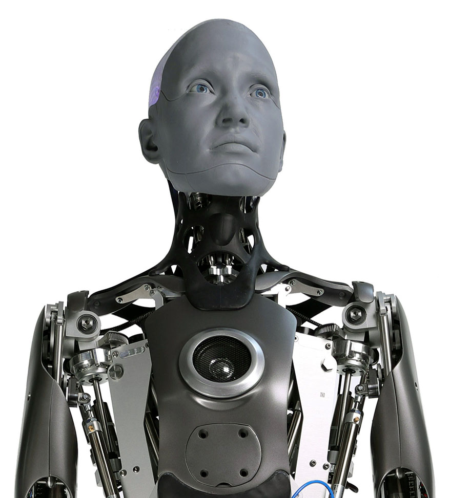

Automate Therapaenis
Therapaenis è il nuovo standard nell'era della tecnologia per la cura e l'assistenza personale. Questo robot avanzato combina intelligenza artificiale all'avanguardia con una vasta gamma di funzionalità per migliorare la vita quotidiana e promuovere il benessere.
Dotato di capacità di apprendimento automatico, Automate Therapaenis si adatta alle esigenze e alle preferenze individuali, offrendo un'esperienza personalizzata e altamente efficace. Che tu stia cercando supporto emotivo, assistenza domestica o semplicemente compagnia, questo compagno tecnologico è pronto a soddisfare le tue necessità.
Grazie alla sua struttura ergonomicamente progettata e alla sua capacità di interagire in modo naturale con gli esseri umani, Automate Therapaenis si integra senza sforzo nella vita quotidiana, fornendo un supporto affidabile e discreto.
Con funzionalità avanzate come il riconoscimento vocale e facciale, Automate Therapaenis è in grado di comprendere e rispondere alle tue esigenze con precisione e sensibilità. Inoltre, la sua connettività Internet e l'accesso a un'ampia gamma di dati consentono un'assistenza sempre aggiornata e informata.
Che tu sia alla ricerca di conforto emotivo, supporto fisico o semplicemente compagnia, Automate Therapaenis è qui per te, rappresentando una nuova frontiera nell'assistenza personale e nel benessere tecnologico.

ASIMO
"ASIMO: L'Avanguardia della Robotica"
Nel panorama della robotica avanzata, spicca ASIMO, una creazione che incarna l'apice dell'innovazione e della tecnologia. Progettato e sviluppato da Honda, ASIMO rappresenta il futuro incarnato, combinando eleganza, funzionalità e versatilità in un'unica entità.
ASIMO non è solo un robot; è un'opera d'arte tecnologica. La sua struttura agile e aerodinamica riflette un'ingegneria di precisione, mentre le sue capacità cognitive lo elevano al di sopra della semplice macchina. Dotato di intelligenza artificiale avanzata e capacità di apprendimento automatico, ASIMO è in grado di adattarsi dinamicamente all'ambiente circostante e alle interazioni umane.
La sua agilità e mobilità sono sorprendenti. Grazie a una serie di sensori e algoritmi sofisticati, ASIMO è in grado di muoversi con grazia e precisione, superando ostacoli e navigando attraverso spazi complessi con facilità. Questa mobilità non è solo una dimostrazione di abilità tecnica, ma apre anche la porta a una vasta gamma di applicazioni pratiche, dall'assistenza domestica all'assistenza sanitaria.
Ma ciò che distingue veramente ASIMO è la sua capacità di interagire in modo naturale con gli esseri umani. Dotato di riconoscimento vocale e facciale avanzato, ASIMO è in grado di comprendere e rispondere alle esigenze delle persone con empatia e sensibilità. Questo rende ASIMO non solo un compagno tecnologico, ma anche un vero e proprio membro della famiglia in grado di fornire assistenza e supporto in una varietà di contesti.
In definitiva, ASIMO rappresenta una pietra miliare nella storia della robotica. Con la sua combinazione di eleganza, funzionalità e umanità artificiale, apre la strada a un futuro in cui la collaborazione tra uomo e macchina è non solo possibile, ma anche desiderabile. Con ASIMO, il futuro è già qui, e promette di essere straordinario.

AMECA
"AMECA: Rivoluzione Tecnologica e Umanità Artificiale"
Nel vasto panorama della tecnologia robotica, emerge un nuovo standard nell'era della cura e dell'assistenza personale: AMECA. Questo straordinario compagno tecnologico combina un'innovativa intelligenza artificiale con una vasta gamma di funzionalità progettate per migliorare la vita quotidiana e promuovere il benessere individuale.
AMECA è molto più di un semplice robot. Grazie alle sue capacità di apprendimento automatico, si adatta dinamicamente alle esigenze e alle preferenze individuali, offrendo un'esperienza personalizzata e altamente efficace. Che tu stia cercando supporto emotivo, assistenza domestica o semplicemente compagnia, AMECA è pronto a soddisfare ogni tua necessità.
Con la sua struttura ergonomicamente progettata e la sua capacità di interagire in modo naturale con gli esseri umani, AMECA si integra senza sforzo nella vita quotidiana, fornendo un supporto affidabile e discreto. Dotato di funzionalità avanzate come il riconoscimento vocale e facciale, AMECA comprende e risponde alle tue esigenze con precisione e sensibilità.
Inoltre, la sua connettività Internet e l'accesso a un'ampia gamma di dati consentono un'assistenza sempre aggiornata e informata. Che tu stia cercando conforto emotivo, supporto fisico o semplicemente compagnia, AMECA è qui per te, rappresentando una nuova frontiera nell'assistenza personale e nel benessere tecnologico.